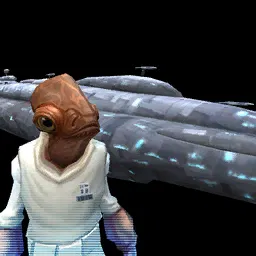
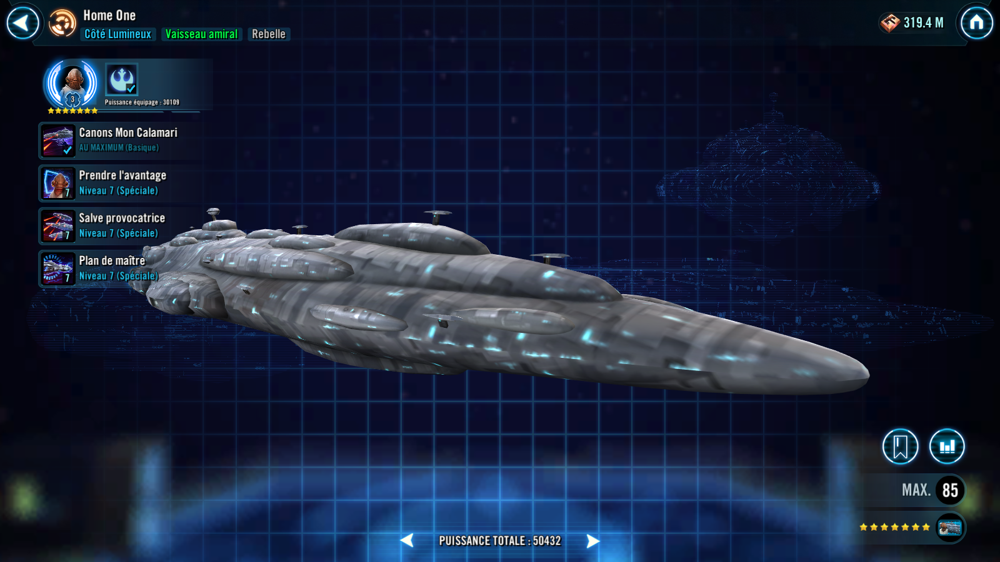
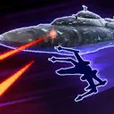
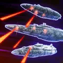
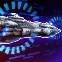
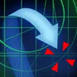

Home One
Versatile Rebel Capital Ship that uses Advantage and bonus attacks to turn the tide

Versatile Rebel Capital Ship that uses Advantage and bonus attacks to turn the tide

Whenever an ally attacks out of turn, they have +50% Critical Damage and gain Protection Up (30%) for 2 turns. These bonuses are doubled for Rebel allies.
If there are no deployed Scoundrel allies and a Rebel B-Wing ally is in Reinforcements, Home One gets a bonus turn at the start of battle with only Call Reinforcement and Mon Cal Cannons available to use, and reduce the cooldown of Call Reinforcement by 1.
Reinforcement Bonus: Reinforcements gain Advantage for 1 turn.

Deal Physical damage to target enemy and call a random ally to Assist.
Dispel all debuffs on target ally. That ally recovers 50% Health and 50% Protection, and all allies gain Advantage for 2 turns.

Deal Special damage to all enemies and call two random allies to Assist.

All allies gain 100% Turn Meter and the Master Plan buff for 1 turn, which can't be Prevented or Dispelled. This ability starts on cooldown.
Master Plan: After this ship uses an ability during its turn, their cooldowns are reset and they gain 100% Turn Meter.

Call one Reinforcement.